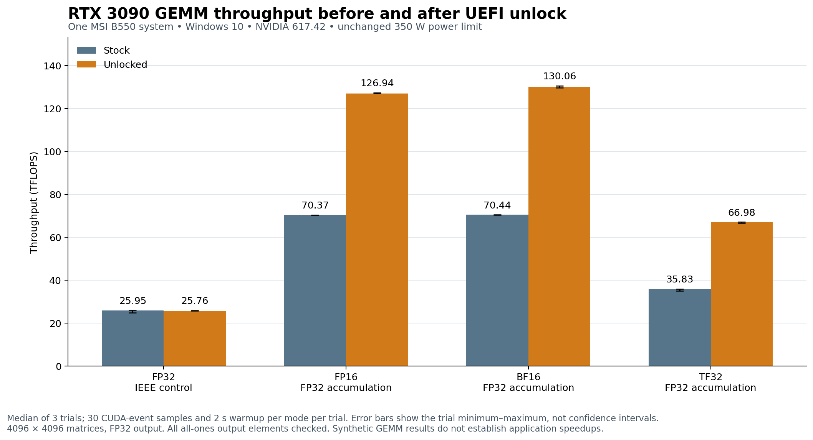

RTX 3090 Windows UEFI Unlock Report on MSI B550 Tomahawk
One supervised UEFI GPU unlock boot succeeded on this RTX 3090 and MSI B550 Tomahawk system. Windows and the NVIDIA driver recovered, the transaction log reported clean completion, and matched three-trial GEMM medians increased 80.4% for FP16, 84.6% for BF16 and 86.9% for TF32, with FP32 accumulation and output. The FP32 IEEE control changed −0.7%.
Test date: 29 October 2026, America/New_York. The successful baseline and post-unlock measurements were recorded on 30 October in UTC. This is a report of one physical machine and one successful unlock boot, not a general compatibility claim for every RTX 3090 or B550 motherboard.

Hardware and software
| Item | Observed configuration |
|---|---|
| GPU | NVIDIA GeForce RTX 3090, 24,576 MiB VRAM |
| GPU PCI identity | Vendor/device 10de:2204; subsystem 10de:147d |
| GPU PCI location | 0000:2b:00.0 |
| VBIOS | 94.02.4b.00.0b |
| Physical retail GPU model | Not independently verified from a physical label |
| CPU | AMD Ryzen 9 5900X; no integrated GPU |
| Motherboard | MSI MAG B550 TOMAHAWK, MS-7C91; SMBIOS board version 2.0 |
| BIOS | American Megatrends A.80; SMBIOS release timestamp 2021-12-16 UTC |
| Windows | Windows 10 Pro x64, version 10.0.19045, build 19045 |
| NVIDIA Windows driver | 617.42 for both completed measurements |
| Reported GPU power limit | 350 W for both measurements |
| Reported maximum clocks | SM 2100 MHz; memory 9751 MHz, unchanged in recorded metadata |
| Display topology | One NVIDIA display controller and one physical RTX GOP; no iGPU; no active EDID driver owner |
| Boot route | FAT32 SanDisk USB, headless wrapper and child, direct Windows Boot Manager handoff |
| Boot settings | Secure Boot off and Fast Startup off, read back from Windows |
| BitLocker C | User reported off; no separate encryption attestation collected |
The physical GPU SKU and any earlier VBIOS cross-flash history were not established. Reported software identities should not be treated as confirmation of a particular retail PCB. The active desktop returned on the same single-GPU system after the experiment.
Source and build provenance
The Windows integration was built from impacifist/Windows-GPU-UNLOCK at commit 75071aa134616c3d65ad315e0cf2810bf34b191b. The tracked source tree remained clean; the workflow generated ignored local configuration, capture fixtures and build outputs.
LLVM clang and LLD 20.1.8 compiled the EFI and host tools. Tooling Python was 3.14.5, with the existing Microsoft C++ build tools 14.51.36231. The standalone benchmark used the existing ComfyUI environment: Python 3.12.14, PyTorch 2.14.1+cu130, CUDA build 13.0. The exact cuBLAS DLL hashes and Torch build metadata are included in the sanitized JSON.
Firmware generation used Zagitta/gpu-unlock at pinned commit 0ebdb1c6308b6a2072be5bf04513472942541956 and its unmodified generator scripts. Inputs and all five outputs were verified against their pinned SHA-256 hashes. Preparation ran locally on Windows using Python 3.14 native zstd support; an alternate filename hard link selected the generator's native tarfile branch while retaining exactly the same verified input bytes. NVIDIA license and notice files were retained locally.
The source firmware family was GA102 / 610.43.03; that was not the installed Windows driver version. The Windows driver remained 617.42. This procedure applied a volatile pre-Windows unlock and did not flash the VBIOS.
| Artifact | SHA-256 |
|---|---|
| Diagnostic EFI | 7c497c41ef6a513f01a1edc453c614db6bf6166111e57638a71e0176d195283f |
| Unlock wrapper EFI | caccdbd54dac13cb9dc49a633885076c2e85f613a1c7c33317f205c7431d3fea |
| Unlock child EFI | 3179e2692a44c54762da8d37088e9a83a48615d152209b09a6a5602f7f0bd1c9 |
| Generated local profile header | cfcc36138896c442ef81e51088fc65b031f4828b8b0099b125fed21a82524586 |
| Host test evidence | e106af9ec57dc39bee09fa4b52ff27176a610e3ed13e0dac692e02f1a8cd9345 |
| Bound source tree | 7bbc2c723a45dcd5d471d1db65c63745335a857f773cb27f2808713fef825d39 |
| Standalone benchmark script | a5dc82885b4961eae8d24fdeb0f3392964f20f6026445582b529d449d8b7dfe5 |
These hashes identify this run. The EFI binaries, generated profile header, partition identifiers and firmware images are excluded from the public package. Other machines need their own captures and accepted configuration.
Procedure performed
- Collected model and version information, identified the existing Windows EFI partition, and confirmed the sole RTX 3090 at PCI bus
0x2b. - Prepared a portable compiler and the five verified firmware assets. The owner confirmed BitLocker was off, then disabled Windows Fast Startup and Secure Boot. Both boot settings were subsequently read back as disabled.
- Built the generic read-only diagnostic EFI, verified its PE format and hash, and staged it on the existing FAT32 SanDisk USB. No USB formatting was needed.
- The owner performed two distinct full-shutdown boots through the MSI F11 UEFI USB menu. Both captures completed with diagnostic status zero.
boot-02also contains the earlierDIAG00, so the evidence represents two diagnostic boots, not three. - Ran the offline compatibility checker, which accepted the two agreeing captures as an automatic local-profile candidate. This candidate status did not itself authorize a write-enabled build.
- Generated
LOCAL-220410de-147d10de-6e52535dfrom the captures and real PROM, parsed FWSEC, then ran all 22 required host jobs. Every job matched its expected exit status. Two negative tests intentionally returned exit 1 to prove rejection. The host jobs simulated GPU/EFI effects and did not perform a physical unlock. - Built the headless USB wrapper and child only after the evidence checks passed. This LOCAL configuration uses the USB route; host jobs named internal or automatic were simulations, not internal installations.
- Recorded the stock benchmark. An earlier attempt stopped at the utilization idle gate before any GEMM trials. A bounded wait for three consecutive idle samples was then added; the final identical script was used for both completed stock and unlocked measurements.
- Staged the verified wrapper, child and assets on the USB, preserving the diagnostic loader as a backup. The owner then performed one supervised full-shutdown USB boot. The wrapper released the RTX display, ran one guarded unlock transaction, verified cleanup and handed off to Windows without an intervening reset.
- After the desktop returned, checked the boot logs, ran the identical benchmark, and recomputed the comparison from the saved event samples.
Codex automated preparation, compilation, collection and analysis; the owner performed BIOS actions and physical cold boots. This was not a maintainer-operated validation run.
The upstream command sequence was research/profile/build-probe.ps1, research/profile/new-machine.ps1, and research/headless/stage-usb.ps1, using the local Windows ESP GUID, compiler paths and asset directory. The resumable new-machine command first staged diagnostics; after two complete captures it generated fixtures, ran tests and built the USB package. Write-enabled staging was a separate step. See the pinned new-machine guide for the original interfaces and evidence gates.
Boot and cleanup findings
The captures showed GA102 chip 0xb72000a1, 24,576 MiB memory, a single RTX GOP, no integrated GPU and no active EDID driver owner. The accepted NVIDIA UEFI GOP build was 0x60009, with .text SHA-256 d045cee2113e461c7c678ec21542b1d0f18356765c0fc6a0bf2dcf824088e011.
The actual unlock transaction latched the observed entry selectors SS0=0x76436062 and SS1=0x3, then wrote the requested SS0=0x88888888 and SS1=0x8. Those requested values remained after the PCIe function-level reset. The transaction reported one FLR, no pending DMA, no retained buffers or mappings, bus mastering disabled, and the original PCI command restored.
pre-FLR selectors: ss0=0x88888888 expected=0x88888888 ss1=0x8 expected=0x8
PCIe FLR returned: result=0
transaction result=0 containment=0 started=1 quiesced=1 fault=0 retained=0 maps=0 FLR=1
FINAL status=0 stage=transaction attempted=1 driver_release=0 clean=1The child field driver_release=0 does not negate the wrapper's earlier NVIDIA display release; the wrapper owns that step. Its log reported original-unlock-return=0, full-windows-start=0 and verify-complete=0. The last persisted wrapper line precedes Windows StartImage; the owner's return to the desktop separately confirms handoff.
Two explicitly tolerated Falcon pre-reset polling timeouts appeared in the transaction log under the project's documented hardware-bug handling. They were followed by successful resets and clean transaction completion. The optional diagnostic parent-baseline collection was unavailable, while the required captures still completed successfully. These details are preserved as qualifications rather than omitted as if every diagnostic service call returned zero.
Benchmark method
The project CUDA benchmark selected PCI bus 01, while this card was at 2b. A standalone PyTorch benchmark was therefore used outside the pinned source tree. The EFI source was not changed to accommodate benchmarking. These measurements use Torch/CUDA 13.0 and should not be treated as byte-identical reproductions of the project's CUDA 12.6 benchmark.
Each measurement multiplied two 4096 × 4096 all-ones matrices, with FP32 output. There were three trials per state, a two-second warmup per mode per trial, and 30 CUDA-event samples per mode per trial. Modes ran in the same order: FP32 IEEE control, FP16, BF16, TF32. Events were synchronized before reading elapsed time. Throughput was calculated as 2 × 4096³ / (median_ms × 10⁹) TFLOPS. Headline results are the median of the three trial TFLOPS values, each already derived from its 30 timing samples.
FP16 and BF16 used torch.mm(..., out_dtype=torch.float32, out=...). Reduced-precision FP16 and BF16 reduction and FP16 accumulation flags were all false. FP32 control requested fp32_precision='ieee'; the TF32 mode requested 'tf32'. All relevant environment overrides were unset. Input and output tensors were preallocated for timing.
Before measuring, the script required the sole RTX 3090 at 2b:00.0, utilization at most 5%, memory use at most 2048 MiB, temperature at most 65°C, and three consecutive idle samples. The same script SHA-256, Python executable hash, Torch configuration, cuBLAS DLL hashes, NVIDIA driver, VBIOS, power cap and reported maximum clocks matched before and after. The script did not change GPU tuning.
Every output element was checked against the exact all-ones result, 4096. All 24 full-output checks passed, covering 16,777,216 elements per check. The package contains all 720 timing samples. This validates this exact matrix pattern; random inputs, other shapes and longer numerical workloads were not exercised.
Reproduction command in the matching Python environment:
python -B benchmark-gemm.py --output stock.json
# After a separately performed successful unlock boot, run the unchanged script:
python -B benchmark-gemm.py --output unlocked.jsonThe script targets this card identity and software version and refuses conflicting or busy environments. It records local provenance paths when run; the supplied public JSON copies replace those paths with basenames.
Measured throughput
| Mode | Stock TFLOPS | Unlocked TFLOPS | Ratio | Change |
|---|---|---|---|---|
| FP32 IEEE control | 25.9513 | 25.7616 | 0.9927x | -0.73% |
| FP16 with FP32 accumulation | 70.3660 | 126.9367 | 1.8039x | +80.39% |
| BF16 with FP32 accumulation | 70.4411 | 130.0559 | 1.8463x | +84.63% |
| TF32 with FP32 accumulation | 35.8296 | 66.9827 | 1.8695x | +86.95% |
All values are TFLOPS and use FP32 output. The IEEE control changed by −0.73%; the Tensor modes increased by 1.80–1.87 times under the same reported 350 W limit.
| Mode | Stock trial 1 | Stock trial 2 | Stock trial 3 | Unlocked trial 1 | Unlocked trial 2 | Unlocked trial 3 |
|---|---|---|---|---|---|---|
| FP32 IEEE control | 25.9786 | 25.9513 | 24.7452 | 25.9358 | 25.7616 | 25.6704 |
| FP16 with FP32 accumulation | 70.3660 | 70.3816 | 70.3269 | 126.9367 | 127.3413 | 126.8655 |
| BF16 with FP32 accumulation | 70.4411 | 70.4925 | 70.3632 | 130.5620 | 130.0559 | 129.6261 |
| TF32 with FP32 accumulation | 35.8967 | 34.9025 | 35.8296 | 66.5783 | 66.9827 | 67.0633 |
The chart error bars show the minimum and maximum of the three trial medians, not confidence intervals. No application-level speedup is inferred from these GEMM measurements.
Telemetry and comparison conditions
Starting temperatures were 32°C stock and 33°C unlocked. The reported power limit remained 350 W, with reported maximum SM/memory clocks unchanged. Actual workload clocks differed, as shown below.
| State | Trial | Temperature after trial | Power snapshot | SM clock snapshot |
|---|---|---|---|---|
| stock | 1 | 42°C | 282.78 W | 1980 MHz |
| stock | 2 | 44°C | 284.44 W | 1980 MHz |
| stock | 3 | 45°C | 282.65 W | 1965 MHz |
| unlocked | 1 | 45°C | 335.52 W | 1890 MHz |
| unlocked | 2 | 47°C | 337.96 W | 1905 MHz |
| unlocked | 3 | 48°C | 339.65 W | 1905 MHz |
These are single telemetry snapshots after each complete four-mode trial. They are not continuous traces, measured peaks, energy-use measurements, or proof of power-limit throttling. Existing manual tuning or startup profiles were not independently audited; no tuning change was made as part of this procedure.
Scope and remaining work
- This establishes one successful supervised unlock cold boot on one machine, following two diagnostic cold boots. Repeated default automatic boots have not been validated.
- Automatic USB boot priority was requested and instructions were supplied, but configuration and a no-F11 boot were still pending when this report was prepared.
- Windows driver 617.42 is the only driver tested in this experiment. No driver upgrade or rollback test was performed.
- The local profile fingerprints the pre-Windows UEFI GOP, not a particular Windows driver version. A Windows driver update alone does not inherently imply an EFI rebuild, but future initialization and performance compatibility remain to be checked.
- BIOS/VBIOS, physical card, slot or Windows system-ESP changes require fresh configuration validation under the project's workflow. This machine's generated build supports the USB route, not an internal-ESP installation.
- No Stable Diffusion, ComfyUI image-generation, game, video, LLM, random-input accuracy, long-duration stability, sleep or hibernate test was performed.
- The unlock is volatile across full power loss. A suitable cold boot through the USB applies it again. Warm restart behavior on this exact setup was not separately tested.
- Pre-test checker/build metadata legitimately retain
hardware_tested=falseorwrite_eligible=false: those describe the stage when those files were created. The later boot and benchmark records establish the observed result; the original metadata were not rewritten to imply broader approval.
The measured result is a large increase in the selected synthetic Tensor GEMMs, with the FP32 control near its baseline. It is not a universal twofold speedup, an upstream compatibility endorsement, or a long-term stability certification.
Public data and source references
The downloadable package includes sanitized stock/unlocked JSON, an aborted idle-check record, all 720 timing samples, 24 per-mode trial records, telemetry snapshots, the unchanged benchmark script, the offline compatibility summary, the 22-job host summary, build/asset hashes and selected boot-log status lines. It also includes PNG and SVG charts and a file hash manifest.
Original local JSON hashes and sanitized-copy hashes are identified separately in data/comparison.json; redaction changes the JSON bytes, not the measured values. The final SHA256SUMS.txt binds the files in the posting package. Hashes detect changes to files and do not constitute hardware attestation.
The package excludes usernames, hostnames, serials, partition/disk identifiers, live firmware handles and memory addresses, complete raw system graphs, PROM/VBIOS dumps, driver-image dumps, per-machine EFI binaries, generated profile headers and proprietary firmware assets. The original evidence remains local. The report was prepared for the owner to post; no public issue or forum message was submitted.
- Windows GPU UNLOCK source at the tested commit
- Pinned new-machine workflow
- Pinned USB boot and recovery workflow
- Pinned firmware preparation
- Pinned benchmark documentation
- Contribution and disclosure guidance
- Zagitta firmware generator source at the pinned commit
Credit for the unlock implementation and prior research belongs to the upstream projects and their contributors. This report documents a local build, machine configuration and measurement run.